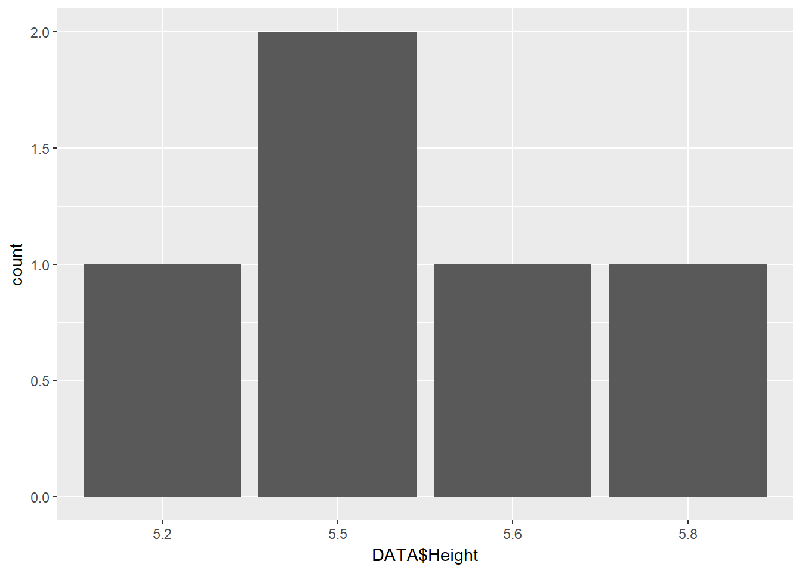

Chapter 1 Getting Started with R and RStudio
In this chapter we will walk through a short introduction to R and RStudio. There are many free and comprehensive tutorials available on the web, so our focus here will be to introduce only the concepts and functionality that we need to get started with price analysis as quickly as possible. Readers who come to this book because they want to do price analysis professionally using R will probably want to go back and learn R in a more comprehensive way after they have finished Commodity Price Analysis and the R Companion. At the end of this chapter I list some excellent tutorials available for free on the web, and there are many more not listed here.
For history on the development of R, Wikipedia is probably the best source.
R is a programming language and software environment for statistical computing and graphics. The R language is widely used among statisticians and data miners for developing statistical software and data analysis. … R is an implementation of the S programming language combined with lexical scoping semantics inspired by Scheme. S was created by John Chambers while at Bell Labs. There are some important differences, but much of the code written for S runs unaltered. R was created by Ross Ihaka and Robert Gentleman at the University of Auckland, New Zealand, and is currently developed by the R Development Core Team, of which Chambers is a member. R is named partly after the first names of the first two R authors and partly as a play on the name of S. R is a GNU project. The source code for the R software environment is written primarily in C, Fortran, and R. R is freely available under the GNU General Public License, and pre-compiled binary versions are provided for various operating systems. R uses a command line interface; there are also several graphical front-ends for it. Source: Wikipedia
R as an open source project has been developed for decades now - which means people have written solutions and made them available for free for all kinds of problems related to statistics, programming, analytics and much more. Whatever kind of work you want to do related to statistics, there is a good chance someone has already done the hard work for you. All you have to do is find it and figure out how to implement it. For price analysis, we will cover the basics here.
R by itself functions through a command line interface, which is not very convenient unless you are very technically inclined. Thankfully, there are several Graphical interfaces (called integrated development environments (IDE)) which makes life a lot easier. Some key functionality is available through clickable menus and viewing panes - just like the vast majority of software we are used to interacting with. My favorite is RStudio, and it is what we will use throughout this book.
If you do not have any background programming, this may all sound daunting. Believe me, using R and RStudio is more accessible than it sounds. Let jump right in and get started. Since R and RStudio are open source, it is available for free to download.
1.1 Download R and RStudio
Go to https://www.r-project.org/, where the software is available for downloading.
Screenshot of r-project.org
Click “download R”, and scroll to a server mirror close to you. It does not matter much which one you choose; mirrors that are physically closer to you will produce downloads marginally faster, but if you are in the United States, for example, and you choose any of the mirrors located in the United States, you are not likely to notice a difference.
When you click a mirror you will see a screen like the following:
Screenshot of R Download Links
Click the link for your appropriate operating system, and click “base” on the next screen. Finally, if you are running windows you will see the following screen:
Screenshot of Windows .exe Download Links
Click the Download R 3.2.1 for Windows link and run the installation file. Note that the release number may be different since new releases of the software periodically come out. Now you have R installed! Now we will install RStudio.
Downloading RStudio is a bit easier. Go to https://www.rstudio.com/products/rstudio/download/ and the download links are on one page for all supported operating systems. Click your operating system and run the installation file.
Screenshot of RStudio Download Links
Congratulations, you now have R and RStudio installed!
1.2 The RStudio Iintegrated Development Environment (IDE)
Now we will get acquainted with the RStudio IDE. First open RStudio. You will see the main window pane divided into three sections. The large pane on the left is called the Console. It is where commands can be executed within R. In the upper right corner is a pane with Environment and History tabs. The environment will show you what data or variables have been saved into the environment. Since we have not done anything, this is empty. In history tab, a record of every command given in the console is kept.
The lower right hand corner holds several tabs: Files, Plots, Packages, Help, and Viewer. More on these things later.
Screenshot of RStudio
The power of R, is not in the line by line execution of commands, it is in writing scripts were commands can be stored and reused. In the upper left hand corner of RStudio, is an icon just below the File menu. Clicking it reveals a menu to open different kinds of script templates. Click it and choose R Script. The R script will open in the RStudio window and now there are four panes open. Let’s assign the value 2 to a variable called x and the value 3 to a variable called y. Then we will add them together and store the result as z. This is done by using the characters <- together to assign the values to the variable names. Type the following into the R script.
x <- 2
y <- 3
z <- x+y
z## [1] 5Click on the Environment tab in the upper right hand corner. You will see x, y, and z and their values. In this book, notice that output from R is preceded by ‘##’. The hashtag symbol indicates comments to R, so anything to the right of a comment will not be evaluated. This facilitates copy and pasting from this document into the R console, since only the intended input will be evaluated.
For the exercises that follow, type your commands into the R script file to save them for reference. In the top right of the script pane you see a button labeled ‘Run’. If you click it R will execute whatever line of code you are on. Pressing Ctrl+Enter does the same. If you click ‘Source’, just to the right of ‘Run’, R will execute the entire file.
Please create a folder on your computer labeled ‘Chapter1’ and save this R script with the name Chapter1.R.
1.3 Basic Calculations
In the Console type the following to get acquainted with performing arithmetic in R.
2+2## [1] 46*7## [1] 4212/4## [1] 35^2## [1] 25sqrt(2)## [1] 1.414214log(100)## [1] 4.60517exp(4.60517)## [1] 99.99998exp(log(100))## [1] 1001.4 Datatypes
When you assign variables or load data into R, it is defined as one of several datatypes that have specific attributes. Some basic familiarity with R’s datatypes is necessary because all R functions expect the inputs to be of certain datatypes, and will not run if you give it a character when it is expecting an integer, for example.
Numeric, Integer, and Character, and Logical
The first four are pretty straightforward. The Numeric datatype is for floating decimal, like 2.34. Integer variables must be whole numbers, and Character variables must be character strings like "Hello World". Logicals are either TRUE or FALSE.
Vector
A vector is a datatype that is a sequence of elements of the same type (enumerated above).
A vector of numeric elements
x <- c(2.3, 4, 6, -10)The function, c() is the concatenate function. It just takes the elements between the comma’s and puts them together in one matrix.
A vector of character elements
y <- c("Hello", "My", "Name", "Is")A vector of logical elements
z <- c(FALSE, FALSE, FALSE, TRUE, TRUE, FALSE, TRUE)Matrix
Matrices are simply two dimensional vectors. Since we need to specify how the dimensions work, we will use a specific function for defining a matrix.
z <- matrix(c(1,2,3,4,5,6), nrow = 3, ncol=2)
z## [,1] [,2]
## [1,] 1 4
## [2,] 2 5
## [3,] 3 6z <- matrix(c(1,2,3,4,5,6), nrow = 2, ncol=3)
z## [,1] [,2] [,3]
## [1,] 1 3 5
## [2,] 2 4 6It takes a vector one one dimension and allocates it to rows and columns as you define in the function arguments. The datatypes of the elements of a matrix must be the same type, as is true for vectors.
List
A list is kind of like a vector, except its elements can be of different types.
list1 <- list(x, y, z, 22, "R is really fun to learn")
list1## [[1]]
## [1] 2.3 4.0 6.0 -10.0
##
## [[2]]
## [1] "Hello" "My" "Name" "Is"
##
## [[3]]
## [,1] [,2] [,3]
## [1,] 1 3 5
## [2,] 2 4 6
##
## [[4]]
## [1] 22
##
## [[5]]
## [1] "R is really fun to learn"1.5 Accessing elements of Vectors, Matrices, and Lists by Index
You access elements of a vector, matrix, or list by enclosing square brackets around the index number and placing it directly after the variable name. For example, x is a vector with 4 elements in it. To access the third element execute the following lines:
x## [1] 2.3 4.0 6.0 -10.0x[3]## [1] 6For matrices you have to specify a row and column index. To get the element in row 1 column 2,
z## [,1] [,2] [,3]
## [1,] 1 3 5
## [2,] 2 4 6z[1,2]## [1] 3List elements are accessed similarly.
list1[3]## [[1]]
## [,1] [,2] [,3]
## [1,] 1 3 5
## [2,] 2 4 61.6 Data.frame
Data frames in R are conceptually analogous to data you are used to seeing organized in an excel spreadsheet. Variables are organized by column and observations are organized by row. The columns can be of different data types, but rows within one column must be the same. To illustrate we will use the mtcars data set, which was extracted from the 1974 Motor Trend Magazine and contains fuel consumption and 10 other variables. The data set is loaded automatically in the standard R illustration, and it the standard example data set most R tutorials utilize.
mtcars## mpg cyl disp hp drat wt qsec vs am gear carb
## Mazda RX4 21.0 6 160.0 110 3.90 2.620 16.46 0 1 4 4
## Mazda RX4 Wag 21.0 6 160.0 110 3.90 2.875 17.02 0 1 4 4
## Datsun 710 22.8 4 108.0 93 3.85 2.320 18.61 1 1 4 1
## Hornet 4 Drive 21.4 6 258.0 110 3.08 3.215 19.44 1 0 3 1
## Hornet Sportabout 18.7 8 360.0 175 3.15 3.440 17.02 0 0 3 2
## Valiant 18.1 6 225.0 105 2.76 3.460 20.22 1 0 3 1
## Duster 360 14.3 8 360.0 245 3.21 3.570 15.84 0 0 3 4
## Merc 240D 24.4 4 146.7 62 3.69 3.190 20.00 1 0 4 2
## Merc 230 22.8 4 140.8 95 3.92 3.150 22.90 1 0 4 2
## Merc 280 19.2 6 167.6 123 3.92 3.440 18.30 1 0 4 4
## Merc 280C 17.8 6 167.6 123 3.92 3.440 18.90 1 0 4 4
## Merc 450SE 16.4 8 275.8 180 3.07 4.070 17.40 0 0 3 3
## Merc 450SL 17.3 8 275.8 180 3.07 3.730 17.60 0 0 3 3
## Merc 450SLC 15.2 8 275.8 180 3.07 3.780 18.00 0 0 3 3
## Cadillac Fleetwood 10.4 8 472.0 205 2.93 5.250 17.98 0 0 3 4
## Lincoln Continental 10.4 8 460.0 215 3.00 5.424 17.82 0 0 3 4
## Chrysler Imperial 14.7 8 440.0 230 3.23 5.345 17.42 0 0 3 4
## Fiat 128 32.4 4 78.7 66 4.08 2.200 19.47 1 1 4 1
## Honda Civic 30.4 4 75.7 52 4.93 1.615 18.52 1 1 4 2
## Toyota Corolla 33.9 4 71.1 65 4.22 1.835 19.90 1 1 4 1
## Toyota Corona 21.5 4 120.1 97 3.70 2.465 20.01 1 0 3 1
## Dodge Challenger 15.5 8 318.0 150 2.76 3.520 16.87 0 0 3 2
## AMC Javelin 15.2 8 304.0 150 3.15 3.435 17.30 0 0 3 2
## Camaro Z28 13.3 8 350.0 245 3.73 3.840 15.41 0 0 3 4
## Pontiac Firebird 19.2 8 400.0 175 3.08 3.845 17.05 0 0 3 2
## Fiat X1-9 27.3 4 79.0 66 4.08 1.935 18.90 1 1 4 1
## Porsche 914-2 26.0 4 120.3 91 4.43 2.140 16.70 0 1 5 2
## Lotus Europa 30.4 4 95.1 113 3.77 1.513 16.90 1 1 5 2
## Ford Pantera L 15.8 8 351.0 264 4.22 3.170 14.50 0 1 5 4
## Ferrari Dino 19.7 6 145.0 175 3.62 2.770 15.50 0 1 5 6
## Maserati Bora 15.0 8 301.0 335 3.54 3.570 14.60 0 1 5 8
## Volvo 142E 21.4 4 121.0 109 4.11 2.780 18.60 1 1 4 2We will build our own data frame to build intuition. Suppose we ask 5 people (Peter, Paul, Mary, Simon, and Garfunkel), 3 questions. Height? Weight? Gender? Columns will represent the variables, and rows will represent individual answers to those questions. Two new functions appear in the code snippet below. cbind() takes vectors and binds them together side by side vertically to form columns of a matrix or table. The function, data.table() takes the rectangular object defined by the cbind() function and makes it into a data frame. The argument, row.names= defines the row names as our vector of character strings containing observation identifiers.
NAMES <- c("Peter", "Paul", "Mary", "Simon", "Garfunkel")
Height <- c(5.8, 5.5, 5.2, 5.5, 5.6) # I'm making up this data...
Weight <- c(150, 155, 120, 145, 160)
Gender <- c("Male", "Male", "Female", "Male", "Male")
DATA <- data.frame(cbind(Height, Weight, Gender), row.names= NAMES)
DATA## Height Weight Gender
## Peter 5.8 150 Male
## Paul 5.5 155 Male
## Mary 5.2 120 Female
## Simon 5.5 145 Male
## Garfunkel 5.6 160 Male1.6.1 Subsetting
There are many ways to slice and dice data frames. We will just introduce a couple of the most common here. First, if your data frame has column names you can subset off just one column of the data set by,
DATA$Weight## [1] 150 155 120 145 160
## Levels: 120 145 150 155 160Alternatively, you can just specify by column number,
DATA[,2] # Weight is the second column## [1] 150 155 120 145 160
## Levels: 120 145 150 155 160If we want to only see Mary’s stats,
DATA['Mary',]## Height Weight Gender
## Mary 5.2 120 FemaleOr simply specify Mary’s row number,
DATA[3,]## Height Weight Gender
## Mary 5.2 120 Female1.7 Install and Load a Package into the Library
Base R comes with a lot of functionality for statistical analysis, but the beauty of R lies in the packages contributed by the open source community. To see what happens if you try to use a function contained in a package you have not yet installed,
qplot(DATA$Height)Anytime you get this error message you know you need to install the proper package (or you have a typo!). If you simply Google ‘R qplot’ you will find the documentation for the function, including the package it is in. Try it for qplot. ... so you found it is in a package called ggplot2, a powerful package for creating excellent graphics. To install this package and load it into your library, there are two methods.
In the lower right pane of RStudio, click the Packages tab, then click Install. Now type
ggplot2and install. Now in the package tab, findggplot2in the list of installed packages, click the check box. These actions installedggplot2and loaded it into the library.Execute the following code:
install.packages("ggplot2")
library(ggplot2)Now try the code from above.
library(ggplot2)
qplot(DATA$Height)
Now we were able to make a frequency plot for height! It shows how many observations at each height there are in the data set.
1.8 Setting up a Project
Initializing an R project is a good way to keep all of your files and directories straight. It is basically a bundle that saves an image of your entire R session, and sets the directories to a location you created it in. If you do not do this, you will inevitably lose track of what file directory R is pointing to. Then you will save data, figures, or images in unexpected locations. To get used to working with different projects, we will create a new project for each chapter of this book.
- Click
File,New Project - Choose to save the work space if prompted.
- choose
Existing Directorysince we already created a Chapter1 folder and saved a script to it.
Now you have an R project for Chapter 1 of this book. Make a new folder and save an R project to it for each Chapter in the text. We will be generating file and figures as exercises and arranging R projects this way will keep us organized.
1.9 Other Resources for Getting Started with R
This introduction to R is certainly not complete, but it is enough to get us up and running to start some basic price analysis in the next chapter. As I noted in the beginning of this chapter, there are so many free resources for learning R on the web. With the introduction in this chapter, you are well equipped to explore further if you are interested. There are a few of links to get you started.
- R Tutorial by Kelly Black, Department of Math at University of Georgia.
- R Resources by idre and UCLA.
- Tutorials by William King, Coastal Carolina University
- CodeSchool by Code School
- Quick-R by Robert Kabacoff
And there are so many more. Feel free to find and explore on your own.
1.10 Exercises
- Create a fake data frame similar to our one named
DATA, except this fake data should contain columns namedAge(in years),City(note that these elements should be character strings),Income(in U.S. dollars), andHSDiploma(make this a logical,TRUEfor yes andFALSEfor no).
Again, I want you to make up the data that goes in the data frame, we are checking here if you can build a data frame of similar structure to DATA from the example above. Save this code in your Chapter1.R script file.
Be sure to ‘Save Workspace Image’ when you close the program!